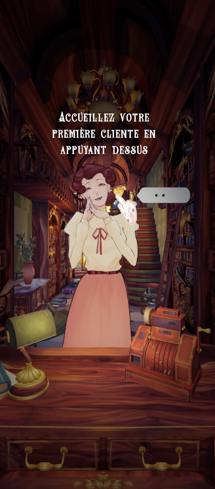
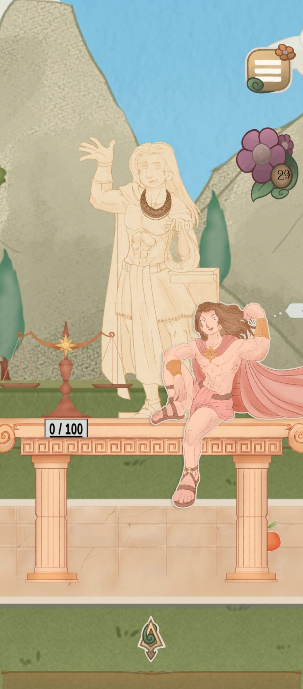
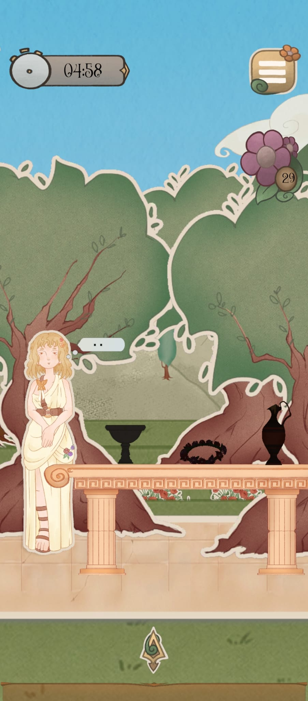

Projet de fin d'études · Unity / C#
Projet de fin d'études
Un jeu situé dans une librairie de Montmartre, où le joueur incarne un bouquiniste. Projet réalisé avec une équipe pluridisciplinaire.
Mon travail
Développement de systèmes de jeu et intégration des énigmes.
Projet d'équipe récompensé par The Rookies.
UnityC#Énigmes



1 / 3